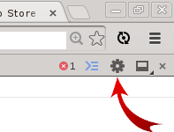

Settings
The settings dialog is available by pressing the cog icon in the top right corner of the dev tools or with the keyboard shortcut ?

Full settings documentation
Options to note
- Disable cache (while DevTools is open)
- Enable JavaScript and CSS source maps
- Experiments - Will only appear if enabled chrome://flags/#enable-devtools-experiments
- Enable support for async stack traces
- Enable frameworks debugging support
- Show step-in candidates while debugging
- Allow custom UI themes
- Enable FlameChart mode in Timeline
- Workspace